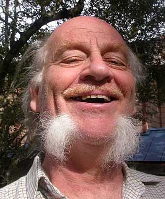

 British/American
butterfly behaviour expert |
Prof. Michael
C. Singer (MA Oxon, First Class Honours) is an excellent although unusual
example of brain-drain from the UK. Before he moved to Plymouth, UK, Singer managed his teaching and butterfly
evolution empire from its nerve centre in
the Patterson Building "Department of Integrative Biology" at
UT.
His home page and Google Scholar pages seem not to express his true essence (although they give his impressive publications), so I felt that these pictures in "Portraits and Quotations" could rectify the problem. Test your knowledge of scientific temrinology -- Singer's first year UT Biology (Austin, Texas) students used to have to answer these: see Gladys & Bernie's discussions. Prospective (post)graduate students, see Singer's advice on choosing a university and PhD supervisor. Singer has had a massive influence on generations of undergraduate and graduate students at UT and researchers on butterfly ecology and behaviour elsewhere, including myself. He probably doesn't realize how important this has been for those of us who have benefited. |